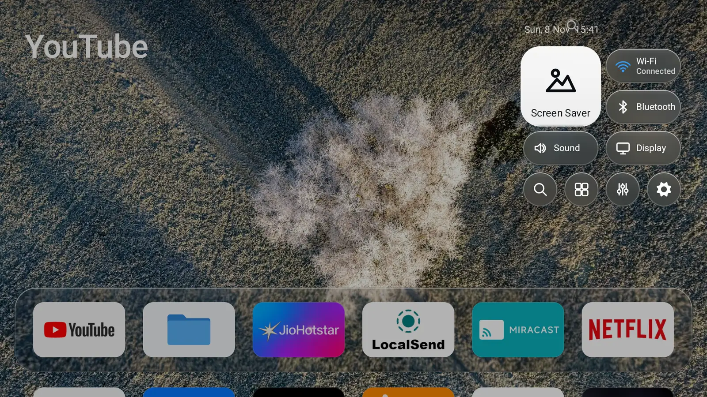

Your apps, on a quiet screen.
Sonora is a home screen for Android TV built the way tvOS works: a glass dock, Control Center, an app switcher and an aerial screensaver. On a 2 GB Mi TV Stick it holds about 37 MB of memory. Google TV’s home screen held 180 to 290 MB on the same stick, and spent some of it on adverts.

Real screenshots from the test TV. With a keyboard, the arrow keys move between them the way a remote would.
Measured on the same stick
One Mi TV Stick, Android 11, 2 GB of RAM. Same debloated system for every run, cold boot, a minute to settle, then the same twelve-key walk across the home screen. Only the launcher changed. The raw dumpsys output is in the repository.
Launcher memory (total PSS) after the key walk.
| Sonora | Google TV | |
|---|---|---|
| Launcher memory at idle | 37 MB | 181–182 MB |
| Launcher memory after the walk | 36 MB | 275–288 MB |
| Frames that missed their deadline | 0.9% | 6.3–7.8% |
| Slowest 1% of frames | 23 ms | 105–200 ms |
| Slow UI-thread events | 0 | 13 |
| Memory left free for apps, at idle | about 900 MiB | about 810 MiB |
Two Google TV runs agreed within 10%; Sonora figures are from the current build. Google TV’s process also hosts its recommendation rows and channel logos, work Sonora never does. That is the cost of the stock screen, adverts included. The screensaver, measured separately, ran at its designed 30 frames a second with no janky frames. Method, caveats and raw dumps.
What it does that others don’t
There are a dozen good ad-free launchers now. These are the parts of Sonora you won’t find together anywhere else.
- It is the home app. It doesn’t hijack one.
- Projectivy, AT4K, Dispatch and Vitrine can use an accessibility service to catch the Home button. An accessibility service can read what is on screen, and the developer of Dispatch notes they cost performance too. Sonora declares no accessibility service, no broadcast receiver and no background service apart from the screensaver. You set it as the TV’s home app and that is the whole arrangement.
- No libraries at all, back to Android 6.
- No AndroidX, no Compose, no Flutter, no Kotlin runtime: only the platform. The springs behind every focus move are solved by hand in
ui/Spring.java. That is why it runs on Android 6.0 TVs, where Vitrine needs Android 11 and Monet and AT4K need Android 8. - tvOS behaviour, not just the tvOS look.
- Most Apple-TV-style launchers copy the grid. Sonora copies how it behaves: Control Center from the corner, a double-press of Home for the app switcher, a search with its own one-line keyboard, settings where Back is always one step, and a focus lift that redraws at most the two cards involved.
- Every effect has a 1 GB answer.
- Sonora reads the TV’s RAM and picks a tier. On about 1 GB the wallpaper is half-size, the glass is frosted rather than bent and cards drop their shadows; from 2 GB up the full glass comes back. It looks like itself on the cheapest stick instead of turning into a list.
- A file manager in the box.
- Files is a Finder-style manager with a sidebar, icon and list views, quick look and USB drives. It comes inside Sonora and ships separately as a 48 KB app. A Share screen serves files to your phone over the home network and shuts the server down the moment you leave it.
- It never phones home, or anywhere.
- There is no outbound connection anywhere in the code. The one socket is the local Share server. The screensaver photos ship inside the app, so even the screensaver works with the network unplugged. No analytics, no account, no sign-in.
- It says what your TV can’t do.
- If a feature needs a permission your TV won’t give, the screen tells you so instead of showing a switch that does nothing. The voice key only appears when an assistant is actually installed.
The field, November 2026
From each project’s own page or store listing. “Not stated” means we couldn’t find it, not that it’s missing.
| Launcher | Source | Built with | Oldest Android | Catches Home with | File manager |
|---|---|---|---|---|---|
| Sonora | Open, GPL-3.0 | Java, no libraries | 6.0 | Nothing; it is the home app | Built in, and standalone |
| Google TV | Closed | Not public | Ships with the TV | Stock | No |
| Projectivy | Closed | Not stated | 6.0 | Accessibility service | No |
| AT4K | Closed | Not stated | 8.0 | Optional accessibility service | No |
| Monet | Closed | Not stated | 8.0 | Not stated | No |
| Vitrine | Open | Kotlin, Compose | 11 | Optional accessibility service | No |
| Couchy | Open, GPL-3.0 | Kotlin | 5.0 | Not stated | No |
| CleanYourTV | Open, MIT | Java, no libraries | 8.0 | Home app; optional accessibility for the Input key | No |
| FLauncher | Open, GPL-3.0 | Flutter | Not stated | A button remapper, or adb | No |
Some are lighter than Sonora: Vitrine reports about 27 MB and just-a-launcher about 35 MB, each on its own TV. They get there by showing less. Couchy reaches back to Android 5. CleanYourTV takes the other road: a 572 KB launcher built around deep per-brand debloat tooling, 31 languages and themes — its launcher deliberately has no blur, no video and no network permission, while Sonora is the whole product: Control Center, app switcher, search, settings, screensaver and Files. Projectivy has Watch Next rows, HDMI inputs and a phone remote, which Sonora does not. Pick the one that fits your TV.
What it can’t do yet
- No Watch Next or channel rows, and no shortcuts to HDMI inputs.
- No signed download yet. You build it and install it over adb.
- On Google TV, becoming the home app means turning off the stock launcher over adb, and on the test stick it came back on after a reboot.
- The 1 GB tier was tested by forcing it on a 2 GB stick. No real 1 GB TV has been through it yet.
- Hiding or turning off another app needs a permission most retail TVs keep for system apps. Sonora tells you when that is the case.
- The app switcher needs Usage access, granted once in the TV’s settings.
- Fire TV sticks on Vega OS can’t install it, or any other Android app from outside Amazon’s store.
Build and install
Linux or WSL with JDK 17 and the Android SDK, and a TV with network debugging turned on (Settings, Device Preferences, About, press Build seven times, then Developer options).
-
Build and test.
git clone https://github.com/mitunmanav/sonora.git cd sonora ./gradlew :app:testDebugUnitTest :files-core:testDebugUnitTest ./gradlew :app:assemblePerf -
Install it on the TV.
adb connect <tv-ip>:5555 adb install -r app/build/outputs/apk/perf/app-perf.apk -
Make it the home screen. Press Home and choose Sonora, or:
adb shell cmd package set-home-activity com.mitun.sonora/.HomeActivityOn Google TV, also turn off the stock launcher:
adb shell pm disable-user --user 0 com.google.android.apps.tv.launcherx.pm enablebrings it back.
The perf build is the release build signed with your debug key, so it installs without a keystore. The standalone Files app builds with ./gradlew :files:assemblePerf.